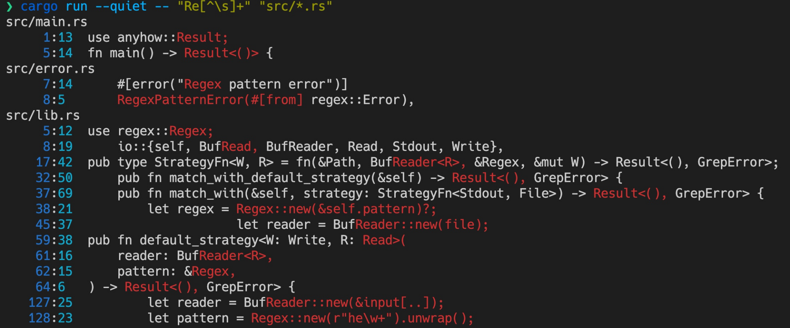

- 00 开篇词 让Rust成为你的下一门主力语言.md
- 01 内存：值放堆上还是放栈上，这是一个问题.md
- 02 串讲：编程开发中，那些你需要掌握的基本概念.md
- 03 初窥门径：从你的第一个Rust程序开始！.md
- 04 get hands dirty：来写个实用的CLI小工具.md
- 05 get hands dirty：做一个图片服务器有多难？.md
- 06 get hands dirty：SQL查询工具怎么一鱼多吃？.md
- 07 所有权：值的生杀大权到底在谁手上？.md
- 08 所有权：值的借用是如何工作的？.md
- 09 所有权：一个值可以有多个所有者么？.md
- 10 生命周期：你创建的值究竟能活多久？.md
- 11 内存管理：从创建到消亡，值都经历了什么？.md
- 12 类型系统：Rust的类型系统有什么特点？.md
- 13 类型系统：如何使用trait来定义接口？.md
- 14 类型系统：有哪些必须掌握的trait？.md
- 15 数据结构：这些浓眉大眼的结构竟然都是智能指针？.md
- 16 数据结构：Vec_T、&[T]、Box[T]_ ，你真的了解集合容器么？.md
- 17 数据结构：软件系统核心部件哈希表，内存如何布局？.md
- 18 错误处理：为什么Rust的错误处理与众不同？.md
- 19 闭包：FnOnce、FnMut和Fn，为什么有这么多类型？.md
- 20 4 Steps ：如何更好地阅读Rust源码？.md
- 21 阶段实操（1）：构建一个简单的KV server-基本流程.md
- 22 阶段实操（2）：构建一个简单的KV server-基本流程.md
- 23 类型系统：如何在实战中使用泛型编程？.md
- 24 类型系统：如何在实战中使用trait object？.md
- 25 类型系统：如何围绕trait来设计和架构系统？.md
- 26 阶段实操（3）：构建一个简单的KV server-高级trait技巧.md
- 27 生态系统：有哪些常有的Rust库可以为我所用？.md
- 28 网络开发（上）：如何使用Rust处理网络请求？.md
- 29 网络开发（下）：如何使用Rust处理网络请求？.md
- 30 Unsafe Rust：如何用C++的方式打开Rust？.md
- 31 FFI：Rust如何和你的语言架起沟通桥梁？.md
- 32 实操项目：使用PyO3开发Python3模块.md
- 33 并发处理（上）：从atomics到Channel，Rust都提供了什么工具？.md
- 34 并发处理（下）：从atomics到Channel，Rust都提供了什么工具？.md
- 35 实操项目：如何实现一个基本的MPSC channel？.md
- 36 阶段实操（4）：构建一个简单的KV server-网络处理.md
- 37 阶段实操（5）：构建一个简单的KV server-网络安全.md
- 38 异步处理：Future是什么？它和async_await是什么关系？.md
- 39 异步处理：async_await内部是怎么实现的？.md
- 40 异步处理：如何处理异步IO？.md
- 41 阶段实操（6）：构建一个简单的KV server-异步处理.md
- 42 阶段实操（7）：构建一个简单的KV server-如何做大的重构？.md
- 43 生产环境：真实世界下的一个Rust项目包含哪些要素？.md
- 44 数据处理：应用程序和数据如何打交道？.md
- 45 阶段实操（8）：构建一个简单的KV server-配置_测试_监控_CI_CD.md
- 46 软件架构：如何用Rust架构复杂系统？.md
- 加餐 Rust2021版次问世了！.md
- 加餐 代码即数据：为什么我们需要宏编程能力？.md
- 加餐 宏编程（上）：用最“笨”的方式撰写宏.md
- 加餐 宏编程（下）：用 syn_quote 优雅地构建宏.md
- 加餐 愚昧之巅：你的Rust学习常见问题汇总.md
- 加餐 期中测试：参考实现讲解.md
- 加餐 期中测试：来写一个简单的grep命令行.md
- 加餐 这个专栏你可以怎么学，以及Rust是否值得学？.md
- 大咖助场 开悟之坡（上）：Rust的现状、机遇与挑战.md
- 大咖助场 开悟之坡（下）：Rust的现状、机遇与挑战.md
- 特别策划 学习锦囊（一）：听听课代表们怎么说.md
- 特别策划 学习锦囊（三）：听听课代表们怎么说.md
- 特别策划 学习锦囊（二）：听听课代表们怎么说.md
- 用户故事 绝望之谷：改变从学习开始.md
- 用户故事 语言不仅是工具，还是思维方式.md
- 结束语 永续之原：Rust学习，如何持续精进？.md
加餐 期中测试：参考实现讲解
你好，我是陈天。
上一讲给你布置了一份简单的期中考试习题，不知道你完成的怎么样。今天我们来简单讲一讲实现，供你参考。
支持 grep 并不是一件复杂的事情，相信你在使用了 clap、glob、rayon 和 regex 后，都能写出类似的代码（伪代码）：
/// Yet another simplified grep built with Rust.
#[derive(Clap, Debug)]
#[clap(version = "1.0", author = "Tyr Chen <[email protected]>")]
#[clap(setting = AppSettings::ColoredHelp)]
pub struct GrepConfig {
/// regex pattern to match against file contents
pattern: String,
/// Glob of file pattern
glob: String,
}
impl GrepConfig {
pub fn matches(&self) -> Result<()> {
let regex = Regex::new(&self.pattern)?;
let files: Vec<_> = glob::glob(&self.glob)?.collect();
files.into_par_iter().for_each(|v| {
if let Ok(filename) = v {
if let Ok(file) = File::open(&filename) {
let reader = BufReader::new(file);
|- for (lineno, line) in reader.lines().enumerate() {
| if let Ok(line) = line {
| if let Some(_) = pattern.find(&line) {
| println!("{}: {}", lineno + 1, &line);
| }
| }
|- }
}
}
});
Ok(())
}
}
这个代码撰写的感觉和 Python 差不多，除了阅读几个依赖花些时间外，几乎没有难度。
不过，这个代码不具备可测试性，会给以后的维护和扩展带来麻烦。我们来看看如何优化，使这段代码更加容易测试。
如何写出好实现
首先，我们要剥离主要逻辑。
主要逻辑是什么？自然是对于单个文件的 grep，也就是代码中标记的部分。我们可以将它抽离成一个函数：
fn process(reader: BufReader<File>)
当然，从接口的角度来说，这个 process 函数定义得太死，如果不是从 File 中取数据，改天需求变了，也需要支持从 stdio 中取数据呢？就需要改动这个接口了。
所以可以使用泛型：
fn process<R: Read>(reader: BufReader<R>)
泛型参数 R 只需要满足 std::io::Read trait 就可以。
这个接口虽然抽取出来了，但它依旧不可测，因为它内部直接 println!，把找到的数据直接打印出来了。我们当然可以把要打印的行放入一个 Vec
不过，这是为了测试而测试，更好的方式是把输出的对象从 Stdout 抽象成 Write。现在 process 的接口变为：
fn process<R: Read, W: Write>(reader: BufReader<R>, writer: &mut Writer)
这样，我们就可以使用实现了 Read trait 的 &[u8] 作为输入，以及使用实现了 Write trait 的 Vec
好，有了这个思路，来看看我是怎么写这个 rgrep 的，供你参考。
首先 cargo new rgrep 创建一个新的项目。在 Cargo.toml 中，添加如下依赖：
[dependencies]
anyhow = "1"
clap = "3.0.0-beta.4" # 我们需要使用最新的 3.0.0-beta.4 或者更高版本
colored = "2"
glob = "0.3"
itertools = "0.10"
rayon = "1"
regex = "1"
thiserror = "1"
对于处理命令行的 clap，我们需要 3.0 的版本。不要在意 VS Code 插件提示你最新版本是 2.33，那是因为 beta 不算正式版本。
然后创建 src/lib.rs 和 src/error.rs，在 error.rs 中添加一些错误定义：
use thiserror::Error;
#[derive(Error, Debug)]
pub enum GrepError {
#[error("Glob pattern error")]
GlobPatternError(#[from] glob::PatternError),
#[error("Regex pattern error")]
RegexPatternError(#[from] regex::Error),
#[error("I/O error")]
IoError(#[from] std::io::Error),
}
它们都是需要进行转换的错误。thiserror 能够通过宏帮我们完成错误类型的转换。
在 src/lib.rs 中，添入如下代码：
use clap::{AppSettings, Clap};
use colored::*;
use itertools::Itertools;
use rayon::iter::{IntoParallelIterator, ParallelIterator};
use regex::Regex;
use std::{
fs::File,
io::{self, BufRead, BufReader, Read, Stdout, Write},
ops::Range,
path::Path,
};
mod error;
pub use error::GrepError;
/// 定义类型，这样，在使用时可以简化复杂类型的书写
pub type StrategyFn<W, R> = fn(&Path, BufReader<R>, &Regex, &mut W) -> Result<(), GrepError>;
/// 简化版本的 grep，支持正则表达式和文件通配符
#[derive(Clap, Debug)]
#[clap(version = "1.0", author = "Tyr Chen <[email protected]>")]
#[clap(setting = AppSettings::ColoredHelp)]
pub struct GrepConfig {
/// 用于查找的正则表达式
pattern: String,
/// 文件通配符
glob: String,
}
impl GrepConfig {
/// 使用缺省策略来查找匹配
pub fn match_with_default_strategy(&self) -> Result<(), GrepError> {
self.match_with(default_strategy)
}
/// 使用某个策略函数来查找匹配
pub fn match_with(&self, strategy: StrategyFn<Stdout, File>) -> Result<(), GrepError> {
let regex = Regex::new(&self.pattern)?;
// 生成所有符合通配符的文件列表
let files: Vec<_> = glob::glob(&self.glob)?.collect();
// 并行处理所有文件
files.into_par_iter().for_each(|v| {
if let Ok(filename) = v {
if let Ok(file) = File::open(&filename) {
let reader = BufReader::new(file);
let mut stdout = io::stdout();
if let Err(e) = strategy(filename.as_path(), reader, ®ex, &mut stdout) {
println!("Internal error: {:?}", e);
}
}
}
});
Ok(())
}
}
/// 缺省策略，从头到尾串行查找，最后输出到 writer
pub fn default_strategy<W: Write, R: Read>(
path: &Path,
reader: BufReader<R>,
pattern: &Regex,
writer: &mut W,
) -> Result<(), GrepError> {
let matches: String = reader
.lines()
.enumerate()
.map(|(lineno, line)| {
line.ok()
.map(|line| {
pattern
.find(&line)
.map(|m| format_line(&line, lineno + 1, m.range()))
})
.flatten()
})
.filter_map(|v| v.ok_or(()).ok())
.join("\n");
if !matches.is_empty() {
writer.write(path.display().to_string().green().as_bytes())?;
writer.write(b"\n")?;
writer.write(matches.as_bytes())?;
writer.write(b"\n")?;
}
Ok(())
}
/// 格式化输出匹配的行，包含行号、列号和带有高亮的第一个匹配项
pub fn format_line(line: &str, lineno: usize, range: Range<usize>) -> String {
let Range { start, end } = range;
let prefix = &line[..start];
format!(
"{0: >6}:{1: <3} {2}{3}{4}",
lineno.to_string().blue(),
// 找到匹配项的起始位置，注意对汉字等非 ascii 字符，我们不能使用 prefix.len()
// 这是一个 O(n) 的操作，会拖累效率，这里只是为了演示的效果
(prefix.chars().count() + 1).to_string().cyan(),
prefix,
&line[start..end].red(),
&line[end..]
)
}
和刚才的思路稍有不同的是，process 函数叫 default_strategy()。另外我们为 GrepConfig 提供了两个方法，一个是 match_with_default_strategy()，另一个是 match_with()，调用者可以自己传入一个函数或者闭包，对给定的 BufReader 进行处理。这是一种常用的解耦的处理方法。
在 src/lib.rs 里，继续撰写单元测试：
#[cfg(test)]
mod tests {
use super::*;
#[test]
fn format_line_should_work() {
let result = format_line("Hello, Tyr~", 1000, 7..10);
let expected = format!(
"{0: >6}:{1: <3} Hello, {2}~",
"1000".blue(),
"7".cyan(),
"Tyr".red()
);
assert_eq!(result, expected);
}
#[test]
fn default_strategy_should_work() {
let path = Path::new("src/main.rs");
let input = b"hello world!\nhey Tyr!";
let reader = BufReader::new(&input[..]);
let pattern = Regex::new(r"he\\w+").unwrap();
let mut writer = Vec::new();
default_strategy(path, reader, &pattern, &mut writer).unwrap();
let result = String::from_utf8(writer).unwrap();
let expected = [
String::from("src/main.rs"),
format_line("hello world!", 1, 0..5),
format_line("hey Tyr!\n", 2, 0..3),
];
assert_eq!(result, expected.join("\n"));
}
}
你可以重点关注测试是如何使用 default_strategy() 函数，而 match_with() 方法又是如何使用它的。运行 cargo test，两个测试都能通过。
最后，在 src/main.rs 中添加命令行处理逻辑：
use anyhow::Result;
use clap::Clap;
use rgrep::*;
fn main() -> Result<()> {
let config: GrepConfig = GrepConfig::parse();
config.match_with_default_strategy()?;
Ok(())
}
在命令行下运行：cargo run --quiet -- "Re[^\\s]+" "src/*.rs" ，会得到类似如下输出。注意，文件输出的顺序可能不完全一样，因为 rayon 是多个线程并行执行的。-

小结
rgrep 是一个简单的命令行工具，仅仅写了上百行代码，就完成了一个性能相当不错的简化版 grep。在不做复杂的接口设计时，我们可以不用生命周期，不用泛型，甚至不用太关心所有权，就可以写出非常类似脚本语言的代码。
从这个意义上讲，Rust 用来做一次性的、即用即抛型的代码，或者说，写个快速原型，也有用武之地；当我们需要更好的代码质量、更高的抽象度、更灵活的设计时，Rust 提供了足够多的工具，让我们将原型进化成更成熟的代码。
相信在做 rgrep 的过程中，你能感受到用 Rust 开发软件的愉悦。
今天我们就不布置思考题了，你可以多多体会KV server和rgrep工具的实现。恭喜你完成了Rust基础篇的学习，进度条过半，我们下节课进阶篇见。
欢迎你分享给身边的朋友，邀他一起讨论。
延伸阅读
在 YouTube 上，有一个新鲜出炉的视频：Visualizing memory layout of Rust’s data types，用 40 分钟的时间，总结了我们前面基础篇二十讲里提到的主要数据结构的内存布局。我个人非常喜欢这个视频，因为它和我一直倡导的“厘清数据是如何在堆和栈上存储”的思路不谋而合，在这里也推荐给你。如果你想快速复习一下，查漏补缺，那么非常建议你花上一个小时时间仔细看一下这个视频。
© 2019 - 2023 Liangliang Lee. Powered by gin and hexo-theme-book.